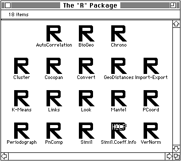

title: R Package Home Page —
The R Package:
Multidimensional analysis, spatial analysis
Pierre Legendre / Alain Vaudor
Département des Sciences biologiques
Université de Montréal
C.P. 6128, Succursale A
Montréal, Québec
Canada H3C 3J7
<table width=”100%” border=1 align=center>
</table>
Click on an icon to see the corresponding module’s description, or try this
text-only version.
<map name="cover">
</map>
<div align=center>

<div align=left>
You may also browse the literature cited in the documentation.
<H4>What is the R Package?</H4> The R Package is a collection of small programs for multivariate and spatial analysis. Originally developed for ecologists, it has found many uses throughout the scientific community. It is highly recommended that you download the accompanying documentation, in either Macintosh Self-reading (just double-click!), PostScript, or MacWrite II format.
If you do not have a Macintosh computer, please see our emulation page for answers to frequently asked questions.
How do I download this fine software?
<p>
<hr>
<h6 align=center>
Last updated on Saturday, March 30, 2013 by <A HREF="http://twitter.com/philippec">Philippe Casgrain</A> <br>
Created on Saturday, April 05, 1997
</h6>
<!--<h6 align="center"><IMG ALIGN=MIDDLE SRC="http://www.jsp.umontreal.ca/cgi-bin/nph-count?link=http://twitter.com/philippeclabo/R/v3/index.html"> accesses since February 22nd, 2000</h6>-->
</TD>
</TR>
</TABLE>